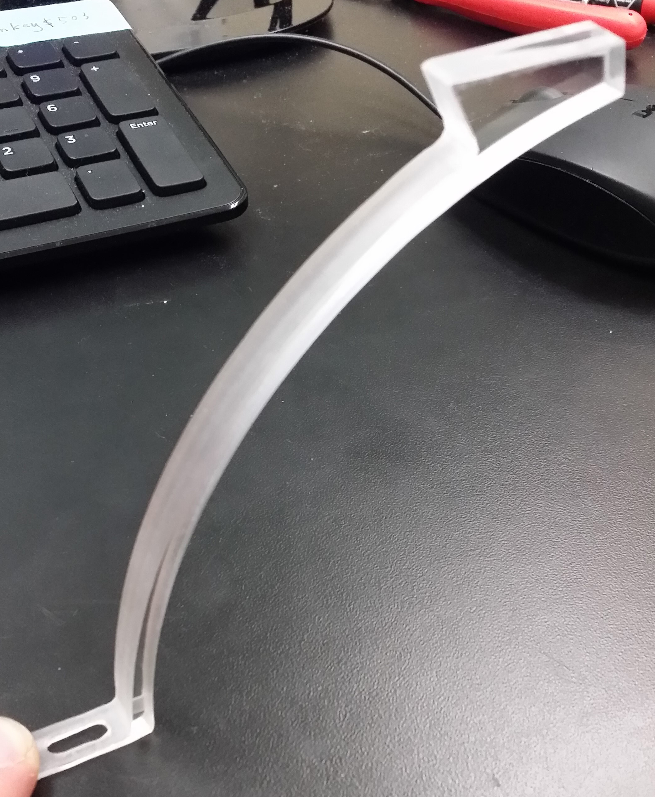
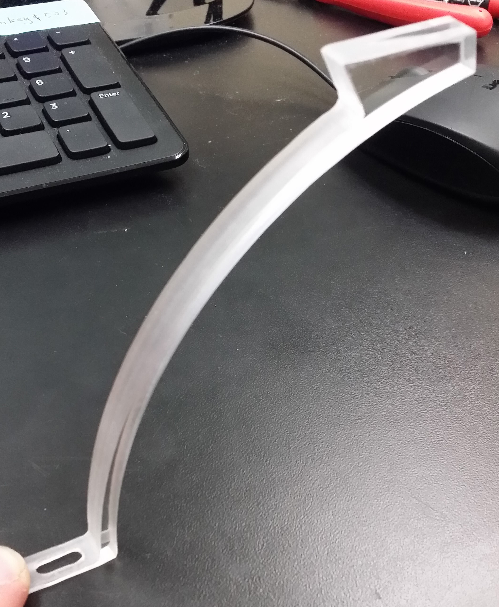
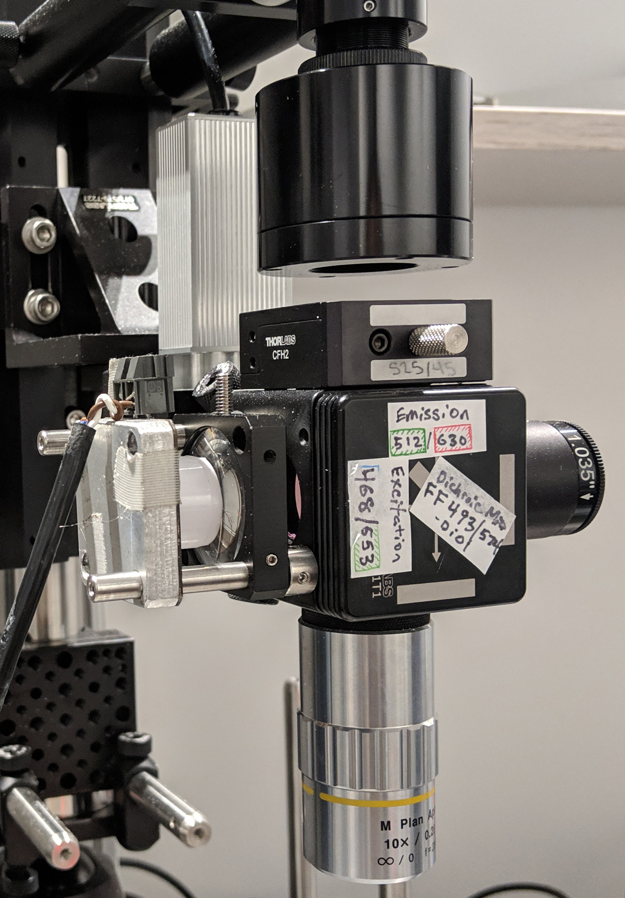
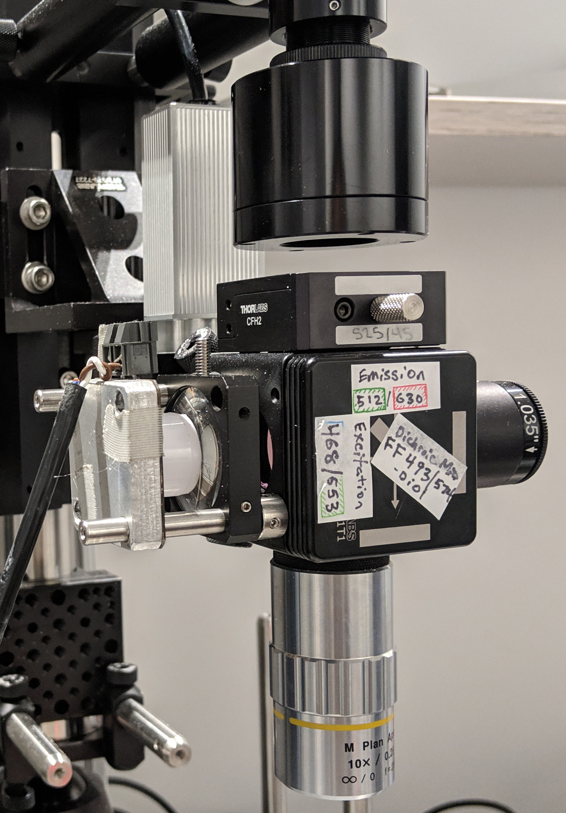

Figure 2.1: Automated animal Tracking for “Mouse in a bowl” type experiments. a — Raw frame of video being tacked, b — Area of detected mouse, c — Overlay of 3 consecutive frames showing movement of mouse between each, d — video overlay showing tracked points, e — video overlay showing tracked points, f — video overlay showing tracked points, g — video overlay showing tracked points
 
 
Figure 2.2: Spherical treadmill. a — 01-treadmill-mouse-running, b — 01-water-port, c — 03-water-delivery-zoom


Figure 2.3: Headplate holder. a — front, b — top, c — bottom


Figure 2.4: Motion sensors. a — 01-motion-sensors-installed, b — 02-motion-sensors, c — Striatum_Figure2


 
 
Figure 2.5: Widefield fluorescence microscope. a — schamatic showing relation of microscope and mouse on spherical treadmill, b — setup1, c — setup2, d — setup3-front, e — setup3-closeup, f — setup3-side, g — setup4-front, h — setup4-closeup, i — setup4-side